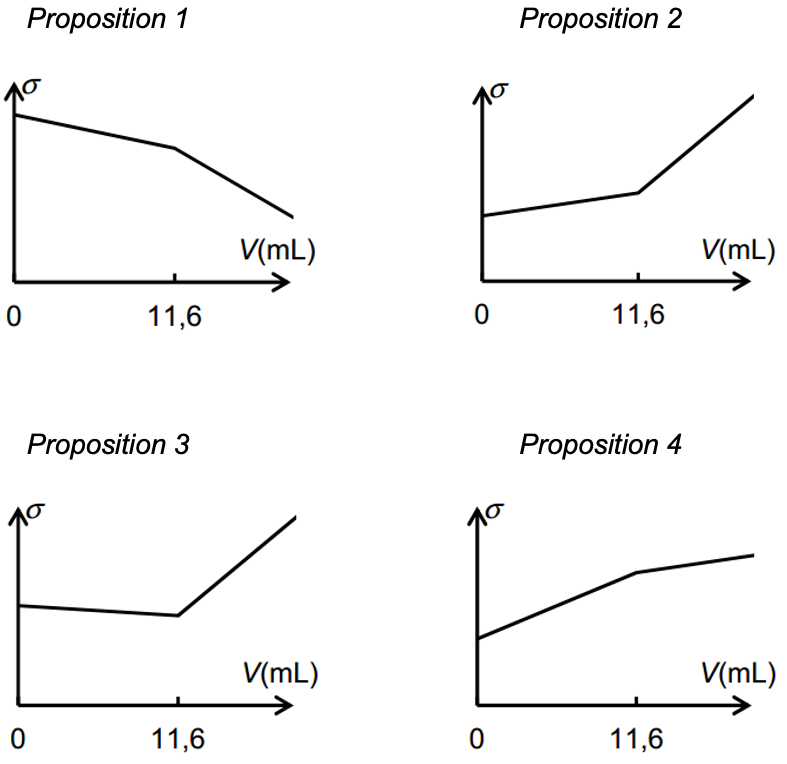
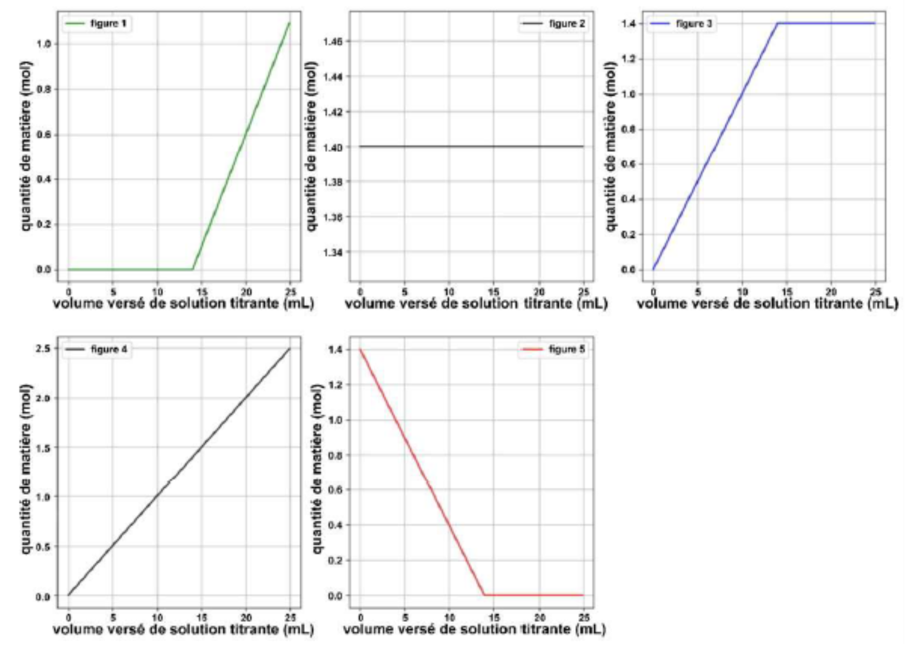
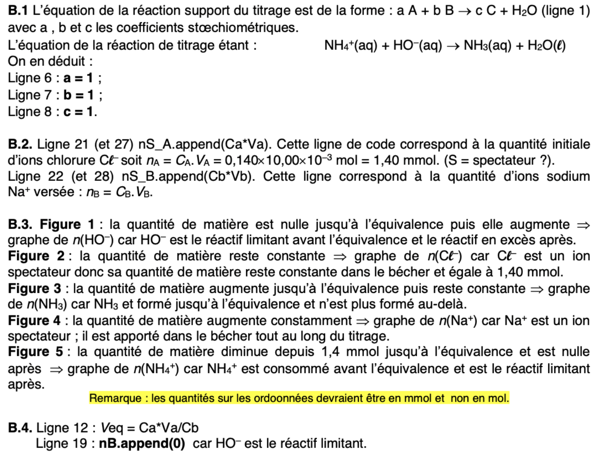

Titrages
Définitions et Formules
- Un titrage est une expérience permettant de déterminer expérimentalement une quantité de matière inconnue.
- La réaction chimique de titrage est toujours rapide et totale
- A l'équivalence les réactifs ont été introduits dans les proportions stoechiométriques:
Equation du titrage:
- On repère le volume équivalent d'un titrage pH-métrique par:
- Un changement de couleur d'un indicateur coloré
- Pic de la dérivée du pH en fonction du volume versé
- Méthode des tangentes
- Pour un titrage suivi par conductimétrie, le volume équivalent correspond au changement de pente de la conductivité en fonction du volume versé.
Techniques clés
- Écrire l’équation de réaction du titrage et savoir quelles espèce sont présentes avant, pendant et après l’équivalence.
- Justifier la rupture de pente grâce à la loi de Kohlrausch.
- Exploiter des graphiques : déterminer le volume à l’équivalence avec la méthode des tangentes ou de la dérivée ou une rupture de pente.
- Réaliser les deux types de titrages : manipulation (dilution si besoin, étalonnage des appareils (pH-mètre), titrage, réalisation du graphique en fonction du type de titrage,...). Voir les 3 TPs
Vidéos de cours
Titrages Titrage conductimétrique
Exercice: Détermination de la teneur en ions chlorure
La mammite est une maladie fréquente dans les élevages de vaches laitières. II s'agit d'une inflammation de la mamelle engendrant la présence de cellules inflammatoires et de bactéries dans le lait. La composition chimique et biologique du lait est alors sensiblement modifiée. La concentration de lactose diminue, tandis que la concentration en ions sodium et en ions chlorure augmente. Cette altération du lait le rend impropre à la consommation. Dans le lait frais normal, la concentration massique en ions chlorure est comprise entre 0,8 g/L et 1,2 g/L. Pour un lait « mammiteux », cette .concentration est égale ou supérieure à 1,4 g/L.
Dans un laboratoire d'analyse, une technicienne titre 20,0 mL de lait mélangé à 200 mL d'eau déminéralisée par une solution de nitrate d'argent (Ag+ + NO3-) de concentration molaire 0,050 mol/L. Les ions argent réagissent avec les ions chlorure pour former un précipité de chlorure d'argent AgCl. Le titrage est suivi par conductimétrie. Le volume équivalent déterminé par la technicienne est 11,6 ± 0,1 mL.
-
Écrire l'équation de la réaction support du dosage.
-
Parmi les représentations graphiques suivantes, quelle est celle qui représente l'allure de l'évolution de la conductivité σ du mélange en fonction du volume V de solution de nitrate d'argent versé ? Justifier.
- Le lait analysé est-il « mammiteux » ? Une réponse argumentée et des calculs rigoureux sont attendus.

Correction
1.
- Avant l'équivalence A chaque fois qu'un ion chlorure réagit avec un ion \(Ag^+\), un ion spectateur \(NO_3^-\) tombe dans le bécher. C'est comme si un ion \(NO_3^-\) remplaçait un ion chlorure. Comme les ions chlorure ont une meilleure conductivité molaire ionique (\(\lambda(Cl-) >\lambda(NO3-)\)), la conductivité \(\sigma\) du milieu diminue. On obtient ici une droite de pente négative.
Après l'équivalence Il n'y a plus d'ions chlorure. La concentration en ions Ag + et NO3- augmente donc la conductivité augmente. On obtient une droite de pente positive.
C'est la **proposition 3.
- A l'équivalence,
Calcul de la concentration molaire en ions chlorure
Calcul de la concentration massique en ions chlorure
Le lait étudié n'est pas "mammiteux" car sa concentration est comprise entre 0,8 et 1,2 g/L
Exo type BAC: Amérique du nord 2021 sujet 1 - Exercice B
Python
D'après Bac 2021 Amérique du nord (sujet 2) - Exercice B –ADDITIF ALIMENTAIRE POUR LES AGNEAUX
On étudie le titrage d'une solution de chlorure d'ammonium par la soude. Le programme suivant a pour but de simuler l'évolution des quantités de matières des espèces présentes. Il s'agit de :\(NH_4^+\) ; \(OH^-\) ; \(C\ell^-\) ; \(Na^+\) et \(NH_3\)
Dans le programme, les quantités de matière sont notées: nA ; nB ; nC ; nS_A et nS_B. Le volume équivalent vaut 14 mL.
- Faire un schéma du titrage
- Ecrire l'équation chimique support du titrage.
- Compléter les lignes 6,7,8 et 12
- Identifier les espèces qui correspondent aux variables
nS_AetnS_B.
Chacun des cinq graphiques suivants, obtenus à l’aide du programme en langage Python représente l’évolution de la quantité de matière d’une des espèces chimiques en fonction du volume versé de solution titrante.

- Compléter la ligne 19.
- En justifiant explicitement le raisonnement, indiquer pour chaque graphe l’espèce chimique correspondante.
Correction

QUIZZ
Q1
Lors d'un titrage conductimétrique ...
- On ne peut pas ajouter de l'eau dans la prise d'essai
- L'équivalence se repère par un changement de pente de la conductivité
- On doit utiliser un indicateur coloré
- Il faut toujours étalonner le conductimètre avant de commencer
Q2
Le réactif titrant se situe
- Dans le bécher
- Dans la pipette graduée
- Dans la burette graduée
- ça dépend du titrage
Q3
Lors d'un titrage suivi par ph-métrie l'équivalence peut se déterminer par
- La courbe dérivée dpH / dV
- La méthode des tangentes
- Un changement de pente
- Le changement de couleur du BBT
Q4
On titre la substance A par la substance B. La réaction support de ce titrage est:
A l'équivalence, on a:
- \(3.n_A= 2.n_B\)
- \(\frac{n_A}{3} = \frac{n_B}{2}\)
- \(\frac{2.n_A}{3} = \frac{3.n_B}{2}\)
- \(\frac{n_A}{2} = \frac{n_B}{3}\)
Q5
La solution titrante est celle
- dont on connaît la concentration
- dont on cherche la concentration
- qui est dans le bécher
- qui est dans la burette
Correction
- Q1: 2
- Q2: 3
- Q3: 1 , 2 (le BBT est pas nécessairement pertinente ça dépend du pH à l'équivalence)
- Q4: 2
- Q5: 1 et 4